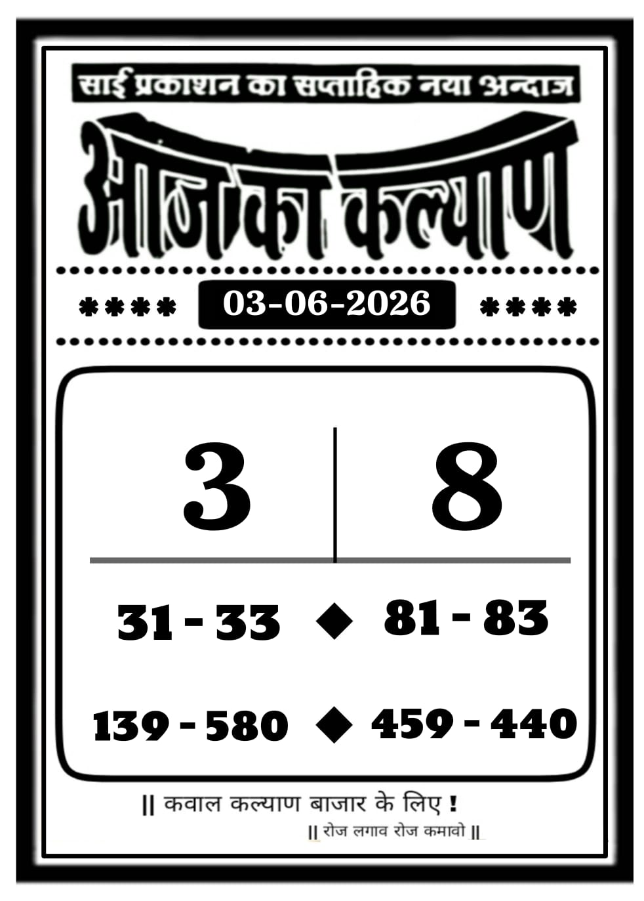
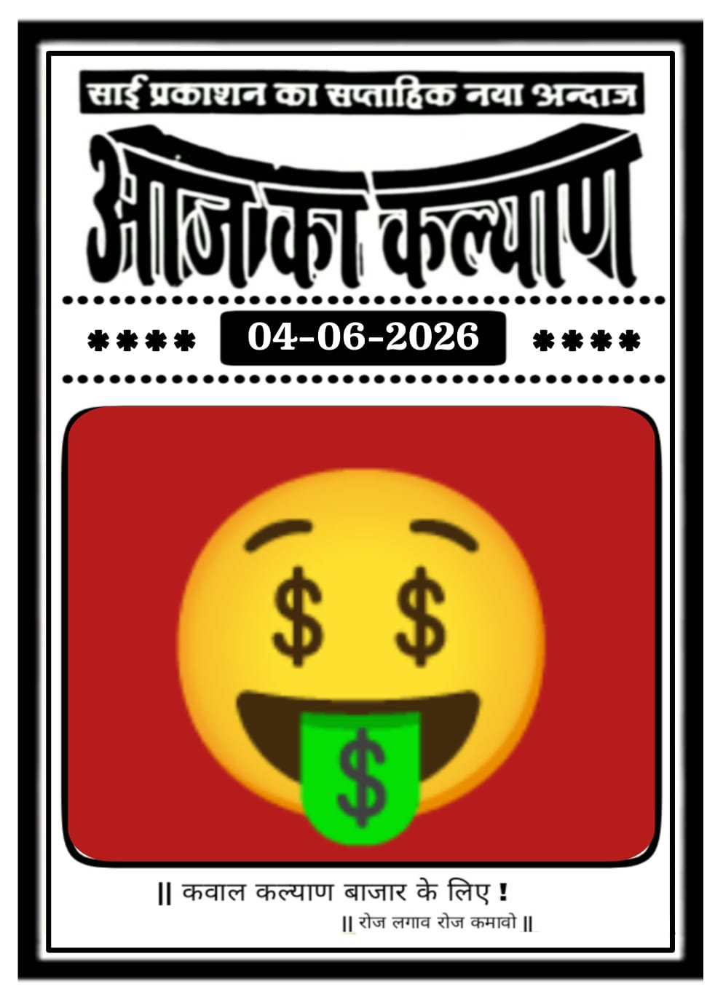

![Image of dpbossss.boston]()
![dpboss net LAXMI_PICTURE]()
Today Lucky Number
Golden Ank
1-6-0-5
Final Ank
KALYAN MORNING - 2
MILAN MORNING - 2
SRIDEVI - 0
MAIN BAZAR MORNING - 8
MADHURI - 4
SRIDEVI MORNING - 8
KARNATAKA DAY - 2
TIME BAZAR - 8
MILAN DAY - 2
NEW TIME BAZAR - 8
KALYAN - 8
SRIDEVI NIGHT - 2
MADHURI NIGHT - 6
MILAN NIGHT - 4
RAJDHANI NIGHT - 4
MAIN BAZAR - 4
BOMBAY DAY - 8
KALYAN NIGHT - 6
OLD MAIN MUMBAI - 8
MADHUR DAY - 8
MADHUR NIGHT - 0
SUNDAY BAZAR - 2
सभी मटका बाजार खेलो ऑनलाइन | Fast Payin - Instant Withdraw 💸 📲 Download App
☔LIVE RESULT☔
के ऑफलाइन व्यापार,बुकी लोग खाईवाल कटिंग के लिए मैसेज करो डायरेक्ट ऑफिस
🏆 Guess करो और बनो No.1
📲 Download DPBoss Forum App Today
📥 Download App
के लिए आज ही हमें ईमेल करे
Email : support@dpboss.net
शर्ते लागु
WORLD ME SABSE FAST SATTA MATKA RESULT
के ऑफलाइन व्यापार,बुकी लोग खाईवाल कटिंग के लिए मैसेज करो डायरेक्ट ऑफिस


📲 Play Matka on Mobile
Play fast, check live results and manage your wallet easily — all in one app.
MAIN STARLINE
| Time | Result | Time | Result |
|---|---|---|---|
| 09:05 AM | 379-9 | 03:05 PM | |
| 10:05 AM | 990-8 | 04:05 PM | |
| 11:05 AM | 478-9 | 05:05 PM | |
| 12:05 PM | 446-4 | 06:05 PM | |
| 01:05 PM | 233-8 | 07:05 PM | |
| 02:05 PM | 08:05 PM |
Mumbai Rajshree Star Line Result
| Time | Result | Time | Result |
|---|---|---|---|
| 09:30 AM | 136-0 | 03:30 PM | |
| 10:30 AM | 356-4 | 04:30 PM | |
| 11:30 AM | 123-6 | 05:30 PM | |
| 12:30 PM | 336-2 | 06:30 PM | |
| 01:30 PM | 568-9 | 07:30 PM | |
| 02:30 PM | 08:30 PM |
MAIN BOMBAY 36 BAZAR Chart

| Time | Result | Time | Result |
|---|---|---|---|
| 11:00 AM | 180-9 | 11:15 AM | 245-1 |
| 11:30 AM | 239-4 | 11:45 AM | 360-9 |
| 12:00 PM | 590-4 | 12:15 PM | 669-1 |
| 12:30 PM | 148-3 | 12:45 PM | 780-5 |
| 01:00 PM | 237-2 | 01:15 PM | 268-6 |
| 01:30 PM | 169-6 | 01:45 PM | 679-2 |
| 02:00 PM | 567-8 | 02:15 PM | -- |
| 02:30 PM | -- | 02:45 PM | -- |
| 03:00 PM | -- | 03:15 PM | -- |
| 03:30 PM | -- | 03:45 PM | -- |
| 04:00 PM | -- | 04:15 PM | -- |
| 04:30 PM | -- | 04:45 PM | -- |
| 05:00 PM | -- | 05:15 PM | -- |
| 05:30 PM | -- | 05:45 PM | -- |
| 06:00 PM | -- | 06:15 PM | -- |
| 06:30 PM | -- | 06:45 PM | -- |
| 07:00 PM | -- | 07:15 PM | -- |
| 07:30 PM | -- | 07:45 PM | -- |
| Time | Result | Time | Result | Time | Result | Time | Result |
|---|---|---|---|---|---|---|---|
| 9:15 AM | 579-1 | 9:30 AM | 246-2 | 9:45 AM | 488-0 | 10:00 AM | 260-8 |
| 10:15 AM | 190-0 | 10:30 AM | 446-4 | 10:45 AM | 228-2 | 11:00 AM | 468-8 |
| 11:15 AM | 600-6 | 11:30 AM | 169-6 | 11:45 AM | 289-9 | 12:00 PM | 400-4 |
| 12:15 PM | 125-8 | 12:30 PM | 179-7 | 12:45 PM | 335-1 | 1:00 PM | 238-3 |
| 1:15 PM | 122-5 | 1:30 PM | 770-4 | 1:45 PM | 578-0 | 2:00 PM | -- |
| 2:15 PM | -- | 2:30 PM | -- | 2:45 PM | -- | 3:00 PM | -- |
| 3:15 PM | -- | 3:30 PM | -- | 3:45 PM | -- | 4:00 PM | -- |
| 4:15 PM | -- | 4:30 PM | -- | 4:45 PM | -- | 5:00 PM | -- |
| 5:15 PM | -- | 5:30 PM | -- | 5:45 PM | -- | 6:00 PM | -- |
| 6:15 PM | -- | 6:30 PM | -- | 6:45 PM | -- | 7:00 PM | -- |
| 7:15 PM | -- | 7:30 PM | -- | 7:45 PM | -- | 8:00 PM | -- |
| 8:15 PM | -- | 8:30 PM | -- | 8:45 PM | -- | 9:00 PM | -- |
🚀CheckApiPricing🚀 Realtime Update,100% Trusted Legacy
10X faster & 24/7 Support & Uptime
Dpboss Special Game Zone
Dpboss Guessing Forum Dpboss Expert Forum Dpboss Kalyan Trick Forum All market free fix game Ratan Khatri Fix Panel Chart Matka Final Number Trick Chart EverGreen Trick Zone And Matka Tricks By DpBossMatka Jodi List
Matka Jodi Count Chart Dhanvarsha Daily Fix Open To Close Matka Jodi Family Chart Penal Count Chart Penal Total Chart All 220 Card ListDpBoss Net Weekly Patti Or Penal Chart From 25-05-2026 To 31-05-2026 For Kalyan, Milan, Kalyan Night, Rajdhani, Time, Main Bazar, Mumbai Royal Night, Kalyan Morning
1=>579-380-678-119
2=>589-110-345-147
3=>346-149-120-256
4=>347-770-149-257
5=>159-267-168-456
6=>330-268-349-880
7=>269-179-368-467
8=>134-378-125-567
9=>568-117-199-450
0=>136-190-550-280
DpBoss Net Weekly Line Open Or Close From 25-05-2026 To 31-05-2026 For Kalyan, Milan, Kalyan Night, Rajdhani, Time, Main Bazar, Mumbai Royal Night, Kalyan Morning
Mon. 1-6-2-7
Tue. 2-7-4-9
Wed. 3-8-2-7
Thu. 1-6-2-7
Fri. 3-8-4-9
Sat. 1-6-5-0
Sun. 2-7-3-8
DpBoss Net Weekly Jodi Chart From 25-05-2026 To 31-05-2026 For Kalyan Milan Kalyan Night, Rajdhani Time, Main Bazar, Mumbai Royal Night Market, Kalyan Morning
22 27 72 77
31 36 81 86
14 19 64 69
40 45 90 95
64 69 91 96
30 35 80 85
FREE GAME ZONE OPEN-CLOSE
✔DATE:↬ : 26/05/2026 ↫
FREE GUESSING DAILYOPEN TO CLOSE FIX ANK
↪ MILAN MORNING
3-8-4-9
157-170-189-112-117
34-39-84-89-43-48-93-98
↪ KALYAN MORNING
4-1-7-3
347-560-115-238
48-11-74-38-43-99
↪ TIME BAZAR
4-9-5-0
347-379-126-122-118
45-40-95-90-54-59-04-09
↪ MILAN DAY
*-*-*-*
***-***-***-***-***
**-**-**-**-**-**-**-**
↪ KALYAN
*-*-*-*
***-***-***-***-***
**-**-**-**-**-**-**-**
↪ MILAN NIGHT
*-*-*-*
***-***-***-***-***
**-**-**-**-**-**-**-**
↪ KALYAN NIGHT
*-*-*-*
***-***-***-***-***
**-**-**-**-**-**-**-**
↪ RAJDHANI NIGHT
*-*-*-*
***-***-***-***-***
**-**-**-**-**-**-**-**
↪ MAIN BAZAR
*-*-*-*
***-***-***-***-***
**-**-**-**-**-**-**-**
↪ RATAN KHATRI
*-*-*-*
***-***-***-***-***
**-**-**-**-**-**-**-**
↪ PUNA BAZAR
1-5-9
128-245-159-258-135-289
13-18-53-58-93-98
↪ SRIDEVI NIGHT
1-4-5-9
489-356-456-126
14-19-44-49-54-59-94-99
↪ MAIN BAZAR MORNING
4-9-3-8
257-270-580-350
43-48-93-98-
4-9-3-8
↪ PADMAVATI
1-3-6-8
137-100-229-123-556-440-134
15-12-34-32-61-67-88-82
2-5-8-9
↪ KARNATAKA DAY
4-5-8
130-235-456-890-350-478
49-47-57-59-80-89
0-7-9
↪ SRIDEVI
2-5-7-0
499-500-700-334
22-27-50-55-72-77-00-05
↪ PRABHAT
5-6-7-8
150-690-556-150-340-467-567-990-
54-59-65-60-73-78-89-84
↪ NEW TIME BAZAR
9-4-2-7
135-590-246-124-359
94-99-44-49-20-25-70-75
↪ SRIDEVI MORNING
2-7-5-0
200-700-159-145-370
20-25-70-75-52-57-02-07
↪ MAIN BAZAR DAY
1-6-3-8
227-367-157-170-378
13-18-63-68-31-36-81-86
| कल्याण | ||||||||
| सोम | 3 | 689 | 5 | 366 | 7 | 223 | 8 | 666 |
| 35 | 53 | 78 | 87 | |||||
| मंगल | 2 | 156 | 7 | 467 | 8 | 477 | 9 | 333 |
| 27 | 72 | 89 | 98 | |||||
| बुध | 3 | 779 | 7 | 359 | 8 | 134 | 9 | 478 |
| 37 | 73 | 89 | 98 | |||||
| गुरु | 3 | 779 | 5 | 168 | 7 | 133 | 9 | 388 |
| 35 | 53 | 79 | 97 | |||||
| शुक्र | 5 | 122 | 6 | 277 | 7 | 269 | 8 | 189 |
| 56 | 65 | 78 | 87 | |||||
| शनि | 2 | 138 | 5 | 122 | 7 | 467 | 9 | 234 |
| 25 | 52 | 79 | 97 | |||||
| KALYAN NIGHT / MAIN BAZAR | ||||||||
| सोम | 3 | 445 | 6 | 169 | 8 | 990 | 9 | 360 |
| 36 | 63 | 89 | 98 | |||||
| मंगल | 3 | 148 | 4 | 158 | 5 | 690 | 6 | 556 |
| 34 | 43 | 56 | 65 | |||||
| बुध | 0 | 127 | 5 | 339 | 8 | 189 | 9 | 568 |
| 05 | 50 | 89 | 98 | |||||
| गुरु | 2 | 246 | 5 | 168 | 6 | 222 | 7 | 557 |
| 25 | 52 | 67 | 76 | |||||
| शुक्र | 1 | 560 | 6 | 259 | 8 | 260 | 9 | 568 |
| 16 | 61 | 89 | 98 | |||||
SATTA MATKA JODI CHART
Time Chart Sridevi Chart Kalyan Morning Chart Madhuri Chart Kalyan Chart Sridevi Night Chart Kalyan Night Chart Old Main Mumbai Chart Main Bazar Chart Milan Morning Chart Milan Day Chart Milan Night Chart Madhuri Night Chart Madhur Morning Chart Madhur Day Chart Madhur Night Chart Rajdhani Night ChartMATKA PANEL CHART
Time Panel Chart Sridevi Panel Chart Kalyan Morning Panel Chart Madhuri Penal Chart Padmavathi Penal Chart Kalyan Penal Chart Sridevi Night Penal Chart Kalyan Night Penal Chart Old Main Mumbai Panel Chart Main Bazar Penal Chart Milan Morning Panel Chart Milan Day Penal Chart Milan Night Penal Chart Madhuri Night Panel Chart Rajdhani Night Panel Chart Madhur Morning Day Chart Madhur Day Panel ChartIntroduction to DPBoss Service
Welcome to DPBoss, where entertainment takes center stage, and a world of diverse activities awaits you. In our vibrant community, we've crafted an experience beyond conventional platforms, offering a rich tapestry of entertainment for users with varied interests.
Discover the joy of connecting with like-minded individuals through our socializing features. Whether you're an extrovert seeking lively conversations or an introvert looking for a cozy virtual space, DPBoss is your go-to destination for meaningful connections.
DPBOSS.Service is your ultimate destination for everything related to the fascinating world of the Satta Matka. As the DPBOSS is a leading authority in the realm of Matka Games, this is your Go-To Platform for any reliable information along with accurate Matka Results and expert guidance obviously. Whether you are a pro or a newcomer player the comprehensive collection of resources such as Kalyan Matka, Matka Result, and Mumbai Matka, will provide you with the thrilling and immersive experience. Join us along and we will embark on this captivating adventure, where every matka number, matka chart, and matka games hold the potential to unlock fortunes.
The history of Satta Matka dates to the 1960s when it originated as a form of gambling in Mumbai, India. Initially, it involved betting on the opening and closing rates of cotton in the Bombay cotton exchange. The practice of placing bets on the fluctuating cotton rates attracted a significant number of people looking to try their luck.
As the popularity of this form of gambling grew, it expanded beyond the cotton exchange. The game underwent several modifications and evolved into a numbers-based betting system. Players began betting on random numbers ranging from 0 to 9, which were drawn from a Matka (earthen pot).
Along with time various Matka Markets came out known as Kalyan Matka, Mumbai Matka, Rajdhani Matka, Night Milan Matka, And Main Mumbai Matka, among others. Every market has their own set of rules and draws which provides player with different opportunities in the game.
Kalyan Matka: Kalyan Matka is one of the most popular variants of Satta Matak which focuses on betting that are based on opening and closing of cotton in the Bombay Cotton Exchange. They have their own rules of draws for the declaration of winning outcome.
Mumbai Matka: Mumbai Matka is the format of satta matka associated with Mumbai. The game includes various draw which helps player to place bet on different number and combinations.
Rajdhani Matka: It is another type of Matka which involves betting on number based which is upon the opening and closing rates of the cotton in the Rajdhani Cotton Exchange.
Night Milan Matka: It is another variant of Satta Matka which is played at the evening or the night hours which offers exciting benefits to player looking to try their luck after the sunset.
Main Mumbai Matka: It is officially focused on Mumbai with their own sets of rules, draws and betting options for the people interested in the Main Mumbai Market.
Gali Deshawar Matka: Gali Deshawar Matka is a specific variant of Satta Matka popular in certain regions of India. It involves betting on numbers and predicting the outcome based on the draw.
Milan Day Matka: Milan Day Matka is a daytime variant of Satta Matka, providing players with betting opportunities during the day, with its own set of rules and draws separate from the night games.
Matka game officially originated in India 1960s. It is a very popular lottery style which involves betting on number and combination and if the result drawn matched your combination the layer can win potential amount. The term "Satta" refers to "betting" in Hindi, while "Matka" means "Earthen Pot" in hindi, traditionally used to draw random numbers.
Game Format: The Satta Matka games are mainly played on the days when market are closed such as weekends or public holidays. It generally includes playing bets on set of numbers from 0 to 9 and the result is drawn randomly.
Betting Process: Players need to place bet on the comniation of number on the opening and closi times of the Satta Market. Bets placed are on different types of market and options which includes single Jodi (pair), patti (three-digit number), and more.
Matka Draw: The Matka Draw involves drawing any of the three numbers from 0 to 9 from the deck of cards. The numbers are made drawn twice so that it creates a two digit number such as number drawn are 5 and 3 then the result is 53. This process is repeated to obtain the second set of numbers.
Result Declaration: The Winning numbers are declared based on the different combination of two set numbers. As an example, as the first set is 53 whereas the second to be 46 then the result will be 53 x 46. Although mostly the result if od 2-digit number and of that the last digit is taken into consideration as the last digit is 6 the winning number is declared 6.
Payouts: Payouts in Satta Matka also varies depending on the various types of bets placed and the amount it includes. As different market has their own different payout ratios and if the player wins, they receive the predetermined amount multiplies by their betting amount.
There are several variants of Matka Games that have emerged over time. Here are some of the popular ones:
Single: in this format the player needs to bet on the single digit from 0 to 9 and if there chosen number draws out, they win.
Jodi: In Jodi player need to choose two numbers so that they can form pair of number they need to choose from 00 to 99 and if there selected number is drawn out, they win.
Patti: Patti is a three-digit number variant where players bet on all three digits of the result. There are different types of patti bets, including single patti, double patti, and triple patti.
Half Sangam: Half Sangam is a kind of combination bet which includes one number chosen in front the list of numbers and pairs along with he other number from the second set.
Full Sangam: The Full sangam is just like the half sangam as player select two numbers from both set and if it is drawn, they win.
Cycle Patti: Cycle Patti is a variation where players bet on a set of three numbers in a specific order. If their selected cycle matches the result, they win.
Kalyan Matka is a popular form of gambling that originated in India, focusing on the opening, and closing rates of cotton traded on the Bombay Cotton Exchange. Over time, it has evolved into a game where players bet on numbers and combinations, like other Matka Games. Here are some tips for playing Kalyan Matka:
1. Understand the game rules and different types of bets.
2. Analyze past results for patterns, but remember that outcomes are based on chance.
3. Set a budget and stick to it.
4. Diversify your bets to minimize risks.
5. Bet with reasonable amounts and avoid chasing losses.
6. Control your emotions and make rational decisions.
7. Stay updated with the latest information and market trends.
Satta Matka is not just a game. It’s a daily habit for many. DPBoss helps users with fast, accurate results and easy guides. From Kalyan Matka to Milan, Rajdhani, and Mumbai Matka – DPBoss provides all charts, satta matta matka results, and guessing tools in one place.
Satta Matka is a popular number-based game in India. It started in the 1960s and is still played widely. The main goal is to guess numbers that win in different markets like Kalyan Matka, Rajdhani Day, and Milan Matka. The name Matka came from how numbers were once drawn from a pot. Today, results are digital, but the game rules remain simple.
DPBoss gives users the Satta Matka result fast. It includes Kalyan Satta Matka result, Milan Day, and Satta Matka Open numbers. You also get DPBoss guessing, DPBoss 143 guessing, and Boss Matka predictions. These help you play smart, not just lucky.
Daily Satta Matka results are posted for Kalyan Open, Kalyan Close, Rajdhani, Milan, and other games. Each day, users can check:
kalyan result
matka result
satta matka open
कल्याण रिजल्ट
milan kalyan matka
kalyan chart
DPBoss covers the full Matka Bazar. This includes Satka Matka, Worli Matka, Milan Matka, and Mumbai Matka. Whether it’s Satt Matka Satta or Satta 143, DPBoss tracks all records and charts with exact data.
DPBoss Boston offers easy design and daily updated data. Users trust DPBoss for Matka Satta, Kalyan Matka number, and DPBoss result charts. Also, all Satta Matka results come from tested sources. We don’t use fake tips or wrong data.
Kalyan Matka is the most followed Matka game. It opens and closes daily. Thousands search Kalyan Satta Matka result daily. Kalyan Matka games include classic and modern play. Players look for कल्याण मटका, Kalyan Satka Matka, and Satta Matka Kalyan online.
All results like DPBoss result and DP Boss result are posted on fixed time. Users can check Kalyaan Open, Satta M, and Sattka Mattka com updates here.
Charts include:
satta matka chart
kalyan chart
matka chart
sattamatka.com chart
Our platform supports many languages like हिंदी (सट्टा मटका), ગુજરાતી (સટકા મટકા), and ಕನ್ನಡ (ಸತ್ತ ಮಟ್ಕಾ). This helps all players enjoy Satta Matka in their local terms.
सत्ता मटका, सट्टा मटका कल्याण, सट्टा मट्टा, सट्टा मटका रिजल्ट, सट्का मटका कल्याण
Unlike fake sites, DPBoss shares true Kalyan Matka result and Satta Batta data. Many others show false guesses. We post DPBoss Matka, DPBoss DPBoss double entries, and clear Satta Matka Open numbers. You won’t see delays here.
Guessing helps in Matka. But only skilled guessing works. Our DPBoss guessing tips are based on trends, not luck. Daily updates include Satta Matta Matka 143 results and Boss Matka records. You can use these for playing smart.
We advise users to play safe. Never invest all money in one number. Use Satta.Matka results, Sattamatka.com tips, and Matka Satka records for safe moves. Also, don't trust sites that claim "fixed numbers." There’s no guarantee.
We keep full history of Matka charts. You can search by:
matka results
matka kalyan
kalyaan result
matka open
matka bajar
मटका बाजार
Popular searched words we support:
satta matka | dpboss | kalyan matka | satta 143 | kalyaan matka result | dpboss 143 guessing | satka matka kalyan | sattamatka.com | dp satta
Also searched: kalyaan bazar, sattka mattka com, sata mata com, mumbai matka, डिपीबोस
Matka 143 is one of the most searched terms in the Satta world. It means a lucky guess or number in Matka games. Many players check "Matka 143" to find tips and ideas. Matka 143 is known for giving hints to increase winning chances. From daily players to experts, all rely on these predictions.
Satta Matka Bazar is not a single market. It includes many games like Kalyan, Mumbai, Milan, and Rajdhani. Each game runs at different times. Players choose numbers in Satta Matka Bazar to try their luck. Charts, results, and tips are updated daily for each Bazar.
DPBoss.in has been a leading Matka result site for years. It gives fast, live, and accurate results. Many also use "DPBoss 143 guessing" daily. From "Milan Night" to "Kalyan Matka Chart," DPBoss.in gives everything. Charts, guessing, and fast updates make it popular.
यह नाम भारतीय खिलाड़ी में काफी जाना जाता है| यह सट्टा मटका की ताजा खबर और गेस की जानकारी का सर्वोत्तम स्थान है|
Satka matka satka matka is often repeated. It shows how deep this game has gone in daily talks. Everyone searches this to find results or charts. From mobile phones to shops, the name is heard everywhere. It's not just a keyword but a trend.
Kalyan Satta is the heart of the matka game. Started decades ago, it still runs with great trust. People look for "kalyan matka result" and "kalyan satta matka" every day. Kalyan opens and closes at fixed times daily. Kalyan, also written as "kalyaan," is popular across India. It is one of the oldest matka markets. Daily players wait for the result.
Satka matka satta is played by millions every day. It is based on number guessing. Luck, timing, and tips are all part of it. Results like "matka result live" are shown on sites like dpboss.net and sattamatka.com.
Tara Matka is a growing game in the satta world. It has quick results and easy rules. Many use tara satta matka as an entry game. People rely on tara matka for fast money. It's rising in charts next to kalyan and milan.
Bombay matka and Kalyan matka started it all. They are still the most followed markets today. You can check both on "dpboss kalyaan" page. Players enjoy both for their long history and trust.
Mumbai satta matka is always trending. It's popular for its old charts and daily winners. Matka result live for Mumbai is updated on dpboss.in. You can also get "satta matkà kalyan result" from here.
DPBoss 143 guessing gives daily hints. It includes madhur matka and "ka matka" games. Many experts use "dpboss 143" tips before placing bets. Guessing is key to win.
Matka guessing is not just luck. It needs study, logic, and a little risk. Follow matka guessing charts on "satta matka dp" or "dp boss kalyan" to improve your game.
सता मटका के लिए डीपी बॉस सबसे ज्यादा है| यहां "dpboos" और "dpbass" जैसे शब्दों की चार्ट भी मिलती है|
Milan night is a daily game. It has a loyal player base. Results come in the night with good prize money. You can check "sattamatkà result" for Milan and other markets easily on dpboss net.
Satta matka kalyan open is searched more than ever. Results for kalyan.matka are always on time. You can also view "kalyaan matka result" and "kalyan satta result" at once. Kalyaan satta matta is not just a game. For many, it is a daily habit. Some play before going to work. You can check mataka and satta matka live every hour on dpboss boston.
Ka matka is a short name used by old players. It also refers to some local matkas. DPBoss chart includes ka matka, milan morning chart, and kalyan night games. Sites like sata matka kalyan.com and boss mataka com are popular for fast results. Players visit them for satta matta.com or satakamataka com results.
Rajdhani day chart is a main market. It runs in day time with stable results. Rajdhani night panel chart also runs at night. Together they make the Rajdhani market complete.
DP boss kalyan covers all matka markets. From kalyan mumbai matka to milan matka, all are listed. All matka section includes big and small games in one place. Dpboss 2 and dpboss are alternate names people use. But the result and charts are the same. Many users still type dpboos or dpboss net to reach the site.
Satta matka fast is a feature users want. It means getting live updates without delay. Satta matka satta matka satta matka is a keyword often used by fans. Kalyaan boss is a local nickname for the head of kalyan matka. Kalyan matka bajar is searched for market open and close updates.
"సత్తా మట్కా", "మట్కా", "ಕಲ್ಯಾಣಿ ಮಟ್ಕಾ", "ಮಟ್ಕಾ ಮತ್ಕಾ", "ಮತ್ಕಾ ರಿಜ್ನಲ್ಟ" – Regional names bring local users. They also reflect how deep matka has gone.
dpbossss.boston brings all satta games to one place. You get live updates, charts, and daily guesses. Whether it's satta matka fast, satta matka kalyan open, or dpboss chart, everything is here. You can trust this platform.
The world of satta matka has grown fast in recent years. People search daily for reliable sources to check their kalyan chart, matka result, and dpboss satta matka updates. Whether you're a newcomer or a regular player, dpbossss.boston brings all the key details at one place. This article covers everything you need to know about kalyan matka, mumbai matka, satka matka chart, and more.
Satta matka is a type of number game played in India. It began in Mumbai and grew across the country. The game includes guessing numbers and checking charts like kalyan chart matka, milan morning, or main matka.
Most people play satta matka mumbai using markets like:
Kalyan matka bazar
Mumbai satta
Milan satta matka
Madhur satta
Star matka
Tara satta
Kalyan milan
Kalyaṇ matka
People trust dpboss because it updates charts fast. You get daily results for:
Kalyan dp
Matka live
Kalyan morning chart
Milan night panel chart
Kalyan matka open
Matka satta kalyan
Our dp matka boss system is clean and simple. We update the boss matkà result and satta matta matka result on time. With easy access and accurate charts, dpbossss.boston helps you stay ahead.
We also provide rare data like:
Final ank
Satta matta .com
sattaa matka com
dpboss 143
Matka guessing 143
The kalyan chart is one of the most followed in India. It shows past results in order. Players use it to guess future numbers. You can also find kalyan matka boss updates and kalyan matkà result today here.
Many charts are shown daily, such as:
Kalyan morning
Kalyan open result
Kalyaṇ matka
Kalyan matka bazar
Kalayan matka ओपन
Our platform also features charts in different languages:
सट्टा मटका रिझल्ट
ಕಲ್ಯಾಣ್ ಮಟ್ಕಾ
ಡಿಪಿ ಬಾಸ್
సత్తా మట్కా
ડીપી બોસ
Boss matka or dp boss is another name for dpboss. It means the main source of matka results. You can check:
Satta matka come
Matka satta result
Kalyaṇ bazar matka
Main matka updates
Satka matka satka matka is a repeated search term. It shows how users are looking for fast and live updates. Our charts are updated without delay.
Check other common keywords like:
Satta dpboss
Dpbos
Dp boos
Satta,matka
Satamatka. com
Here are the top markets people check daily:
1. Kalyan Matka Bazar
Most trusted and oldest market. Results shown two times a day. Includes kalyan open matka and kalyan satta matka open.
2. Mumbai Satta
Popular in Maharashtra and Gujarat. Updated daily.
3. Milan Matka
Comes in two parts: Milan morning and Milan night.
4. Star Matka
Daily number updates. Trusted for accuracy.
5. Madhur Satta
Offers early morning and late night results.
The kalyan morning chart is the first to update. It is followed by kalyaṇ matka and kalyan open result. You will also find:
Milan night panel chart
Sita morning chart
Boss matkà kalyan
Kalyan matka boss
Kalyan chart matka
Charts are simple tables. Each row shows one result. Each chart uses numbers from 0 to 9.
The term satta matta means random number selection. Players guess based on old results. You can also check satta matka com or sattamataka com for extra info.
At dpbossss.boston, we show:
Full satta matka kalyan matka chart
Matka guessing 143
Daily kalyan satta bajar records
Satta matta .com references
People search for matka in many languages:
Hindi: सट्टा मटका, मटका कल्याण, सटा मटा कल्याण
Kannada: ಬಾಸ್ ಮಟ್ಕಾ, ಸತ್ ಮಟ್ಕಾ
Gujarati: ડીપી બોસ
Marathi: कल्याण मटका ओपन
Telugu: మట్కా
Charts are the base of the game. Players use them to:
Check kalyaṇ matka results
Track matka satta kalyan trends
Compare with satta matka fast result
Guess next final ank numbers
We update the sata matka and matka सटका कल्याण on time. You can rely on dpboss. for trusted updates.
Guessing is key in satta. At dpbossss.boston, we support you with:
Matka guessing 143
Boss matkà result
Satta matka number
Kalyaṇ जोड़ी चार्ट
You can compare numbers using:
Main matka
K matka
Ka matka
Kalyaṇ result
Below is a quick list of what players often search:
Satta matka mumbai
Kalyan satta bazar
Dp matka boss
Dpboos
Kalyaṇ mṭkka
Dp boss सटका मटका
Satka matka chart
Sttamtka sttamtka
Bossmatka
If you're looking for quick matka results, correct kalyan charts, and all satka matka satta updates in one place, dpbossss.boston is your best choice. We cover everything from kalyaṇ matka to matka boss, and we make sure results are fast and real.
You can check:
Kalyaṇ matka result today
Satta matka fast result
Matka satta result
Kalyaṇ open result
Kalyaṇ satta matka open
Satta Matka remains one of the most followed number games in India. With lakhs of people checking daily results, the demand for quick and accurate satta updates has grown. DPBoss stands as the most reliable name when it comes to satta matka results, kalyan night result, and final ank updates. The platform provides all live charts, fix numbers, and matka guessing information in one place.
Kalyan satta matka kalyan is one of the most searched terms in the satta world. People from every city visit DPBoss daily to check fast results. From milan kalyan satta matka to main bazar matka, the site keeps everything updated. It is also well known for its perfect coverage of rajdhani day panel chart, night markets, and special draws like sridevi satta matka.
Most players search for satta matka net or satta matka boss for checking results. These keywords have become common among daily matka users. Dpboss live charts are known for speed and accuracy. Whether it is about tara chart, kalyan ka result, or कल्याण चार्ट मुंबई, the site delivers real-time results without delay. Users also track kalyan open fix and kalyan close for accurate guessing.
Live updates from dp boss kalyan chart and satta matta matka results today are in demand throughout the day. This is where serious players depend on accurate charts like boss matka kalyan and satta matta matka kalyan chart. For many, the game is not only about luck but smart reading of records. The site supports that need by providing every required detail including कल्याण मटका सट्टा and satta matka final results.
Fans from various regions follow the game in their own language. DPBoss has coverage in multiple languages. In Gujarati, it shows વરલી મટકા and દોબોસ charts. In Kannada, users search for ಕಲ್ಯಾಣ ಮಟ್ಕಾ and ಮಟ್ಕಾ ರಿಸಲ್ಟ್. These local terms have been part of search trends. The Hindi audience looks for सट्टा मटका, सट्टा मटका फास्ट, and सत्ता मटका सत्ता मटका.
Among the top-performing sections of DPBoss is the dpboss 143 guessing madhur area. People who focus on satta guessing often depend on this chart. Along with final ank and guessing records, the site also shows fast updates for markets like milan satta and night milan chart. Many experienced players say DPBoss gives the सट्टा मटका fastest result compared to other portals.
People looking for d.p.boss or dpboss satta know that only one site gives clean and daily charts. Here, you can find updated panel charts like main bazar panel chart and results from rajdhani night chart panel. Along with that, it also covers milan कल्याण and other combo market results. Daily players make it a habit to visit the site for real-time updates.
Every day, users type in search queries like dp boss 2, boss matkà, dpboss final ank, and dp boss guessing. All these users want is a quick and reliable source of truth. That’s why DPBoss has become a trusted name in the satta world. It provides everything from कल्याण सट्टा मटका रिजल्ट to night guessing tips and panel chart details.
Kalyan mumbai satta matka and bombay satta are two markets with a long history. Even today, their charts are studied carefully by serious players. These charts are combined with satta mataka and stka mtka com results to get better predictions. DPBoss brings these together in one place, making it easier for players to decide.
Matka Guessing Made Simple with Clean Charts
Charts are key in the satta matka game. DPBoss has data for matka satka matka satka, fast matka, and matka matka matka. It even includes less common charts like sridevi morning and sita morning. These early markets are usually updated by 9 AM. Many users begin their day with a check of sridevi satta matka charts and try their luck on the basis of morning guessing.
DPBoss also helps in guessing by offering dpboss matka result and boss matka result with fast updates. People want speed and correctness, and the site manages to offer both. The number of users typing kalyan result today or satta matka live result is growing. These terms show how the game is becoming more digital. You can now follow markets like satta matka tara or कल्याण बॉस मटका directly from your mobile.
Tara matka is also gaining attention. The site gives data for तारा मटका and तारा सट्टा मटका as well. These results are shown under the morning and mid-day section. Other than that, users looking for sattaka mattaka com and satta mataka can find all the updates instantly. Most markets follow fixed schedules, and DPBoss updates them on time.
Past Data Plays a Role in Present Fix Numbers
Some keywords are searched every hour. These include matka fast, satta matka dpboss, dpboss chart, and कल्याण मटका सट्टा. These charts are not only numbers. They give a pattern. Some users even go deep into old records to plan their next move. For that, charts like satta matta matka dp and कल्याण चार्ट रिज़ल्ट are very useful.
You can track satta matka 143 results too. The market for 143 guessing has grown. People interested in 100 matka guessing 143 often mix those tips with main bazar matka patterns. This combination improves chances. That is why dpboss guessing is in high demand among players.
People still love old-style names like d.p.boss or even type सत्ता matka to get the results. From कल्याण मटका to कल्याण चार्ट मुंबई, users visit multiple times a day. The platform is open 24 hours. Whether you play in morning or at night, you get your satta matta matka results fast.
The website dp boss net stands out for many reasons. It is easy to use, mobile-friendly, and supports Hindi, Marathi, Gujarati, and Kannada search traffic. Results from markets like milan night, rajdhani day, and boss matka kalyan are added daily with no delay. That is why DPBoss is not just another matka site. It is the first choice of most daily players.
Why Players Trust DPBoss for Results
Players also trust the live records from kalyan matka khabar and DPBoss final results. These records are shared without filters. There are no hidden changes, no missing numbers. That keeps the trust strong. People often visit multiple times just to confirm. The same user who checks kalyan matka repeatedly may return by night for the latest kalyan night result.
Satta matka boss is a term that shows the leadership of this site in the matka world. Daily traffic shows how people use it for satta matka live result, dpboss live, and matka guessing help. As the demand for fast and correct updates keeps rising, the site continues to upgrade its speed and data quality.
When you are in the satta world, time matters. A delay in result can cause confusion. That's why users trust only dpboss matka result for all markets, especially for main bazar matka and milan satta. The results are added on time, every time.
Today, if you search for सट्टा मटका कल्याण रिज़ल्ट, satta matta matka kalyan chart, or satta matka kalyan satta matka kalyan, DPBoss is the answer. It is the go-to site for daily results, chart history, and fast final ank updates.
DPBoss covers everything from kalyan matka satta matka to sattaka mattaka com in one page. There is no need to go anywhere else. All fix results, guessing tips, and fast charts are given clearly. Whether you play for fun or follow full time, this site supports every level of user.
From the old names like कल्याण चार्ट रिज़ल्ट to the latest searches like boss matka boss matka, it covers the full matka space. It gives users every result they need including कल्याण बॉस मटका and kalyan matka khabar.
If you are into guessing, checking charts, or following daily satta matta matka results, DPBoss is the perfect place. It brings you the fastest kalyan result today, clean matka satta updates, and full charts from every market.
DPBoss Matka Guide: Live Kalyan Result, Charts, and Fast Updates
Satta Matka is a daily numbers-based game followed by millions in India. From beginners to long-time players, many rely on one source for results and charts — DPBoss. This website gives updated satta matka khabar, kalyan fast result, and everything from kalyan bajar to satkamatka com in real-time.
People searching for satta matka kalyan mumbai or कल्याण का रिजल्ट depend on fast and clean results. DPBoss delivers exactly that. With trusted results like kalyan open close, sridevi chart, and satka matka fast updates, the site serves as a central point for all matka users.
The Rise of DPBoss and Satta Matka Interest
Over the years, DPBoss became a key platform for matka users across India. It is especially popular in cities where people play regularly and check charts like kalyan market, main bazar result, and satka matka dpboss.
Daily users often visit dpboss kalyan for fast results and clean satta matka guessing data. They are interested in games like milan kalyan satta, kalyan matka kalyan, and satta matka satta matka satta matka satta matka. These terms are searched across languages like Hindi, Marathi, Gujarati, and Telugu.
Players also type matka dp, mataka com, satamtka com, and even satta mataka .com while looking for updates. DPBoss gives everything clearly, with results for golden ank, madhur result, and special charts like sridevi night panel chart.
Satta Matka in Regional Languages
The game is not limited to Hindi or English. Gujarati users search for કલ્યાણ મટકા, સટકા મટકા બજાર, and સટકા મટકા સટકા મટકા. Telugu speakers search for డిపి బాస్ and సట్కా మట్కా. DPBoss understands this and offers language-friendly results.
These charts help users from all backgrounds find updates for games like kalyan kalyan, अटका मटका, सट्टा मटका सट्टा मटका सट्टा मटका, and अटका मटका सटका. Regional names like वर्ली मटका and कल्याण बाजार मटका are commonly typed by users.
The matka world connects people who want simple numbers with accurate timing. That’s why keywords like kalyan day result, dp satta matka, and satka matka bajar are so important in daily searches.
How DPBoss Became the Top Source for Matka Results?
People want results fast. That is why they visit DPBoss for kalyan live result, dp matka result, and quick access to sridevi morning chart and satka matka kalyan result. The site gives every market update from fix matka to satka matka bazar.
What makes DPBoss trusted is its simple layout and reliable records. It offers everything in one place. From d p boss to dpbossss.services, people follow it for kalyan satta king updates and matka final results.
This site covers both early and late markets. Morning users follow sridevi chart while evening users wait for kalyan open to close. The database is refreshed daily to make sure no one misses out on satta matka milan kalyan, kalyan dpboss, or even special charts like तारा चार्ट.
Important Charts and Results on DPBoss
The platform gives regular charts like कल्याण मटका चार्ट, satta मटका result, and satka matka kalyan chart. These records are key for planning numbers and studying the pattern of results. Players mix results from satkamatka .com with those of satka matka fast and matka.com.
You also find updates on kal्याण चार्ट मटका and even old records linked to matka com and matka come. These are used by players to calculate next fix numbers and play in live rounds.
Charts like dpboss मटका, डीपी बस, and डीपीबीएस सट्टा मटका are always in demand. These terms are ranked on satta sites due to high user interest. Many prefer typing satta मटका dpboss instead of full domain names. The result remains the same. DPBoss delivers correct numbers without delay.
Kalyan Market and Daily Results
Kalyan is the heart of the matka world. Every player, whether new or old, checks kalyan. matka, kalyan bajar, and kalyan market results. These are among the most searched pages on DPBoss. Each draw includes updates from kalyan open close and kalyan matka come.
DPBoss adds results for both kalyan fast result and slow rounds. You can check records like satka matka cool, kalyan mumbai, and satka matka com quickly. These records are updated in less than a minute.
Most players visit the site multiple times a day. They start with sridevi chart in the morning, go through golden ank around noon, and wait for kalyan open to close by evening. These routines are common in every satta home.
Guessing and Fix Numbers on DPBoss
A big part of satta is guessing. Many visit DPBoss for satta matka guessing and fix matka numbers. These are based on chart reading and old result study. Players check results like satta kalyan matka, kalyan satta king, and dpboss service to plan their fix numbers.
Guessing is often supported by charts like matka result matka result and satka matka dpboss. Many also use dp matka result and d p boss to match their inputs. Some go deep into history using satkamatka.com kalyan records to match present results.
The aim of all this is to try to find the right number for markets like satka matka bajar, satka matka fast, and kalyan satta king. The more clean the chart, the better the chance of correct guess. That’s what makes DPBoss stand out.
DPBoss User Trust and Platform Growth
The reason behind the growth of DPBoss is user trust. People want results without confusion. The platform provides updates for satka matka kalyan result, matka final, and kalyan. matka without delay.
It handles lakhs of visits daily from users searching for satta matka dpboss, satka matka bazar, and satka matka kalyan chart. These records are shown fast so that players don’t have to wait. DPBoss gives live updates that match official results and market timings.
Some users go beyond matka charts and also follow news like dpboss service, dpbossss.services, and changes in kalyan dpboss result time. These updates help users plan when to visit the site.
Mobile Users and Daily Charts
Today, most users check DPBoss from their phone. They type fast keywords like satta matta satta matta, satta satta matka, and kalyan kalyan. These users want fast updates. They don’t want to scroll or refresh many times.
That is why DPBoss keeps its site simple. No heavy layout. Just direct charts. If you want to check कल्याण डीपी बॉस, कल्याण बाजार मटका, you can do it in seconds. No page delay.
Charts like mataka com, matka come, and satta matka kalyan mumbai load fast. Players can get all results from milan kalyan satta to sridevi night panel chart easily. These charts help users track game flow and guess better.
Main Bazar and Mumbai Kalyan
Another key area of focus is main bazar result. This chart is often studied alongside mumbai kalyan matka and kalyan market records. These combined charts are important for anyone playing in the western region.
Players type terms like satka matka kalyan result, satkamatka .com, and satamtka com to get this data. DPBoss has these results ready with correct time and panel display. Users also check fix matka options under their daily market data.
DPBoss even tracks long-term charts for users who study past years of results. Terms like कल्याण मटका चार्ट, कल्याण चार्ट मटका, and सटामटका are common in this area. Every record shown is taken from trusted sources.
DPBoss Boston is the Home of Matka Lovers
Satta Matka is not just a game. For many, it is a part of daily life. People follow charts, guess numbers, and check records multiple times a day. DPBoss makes that possible with fast, clean, and daily updated charts.
From sridevi chart to satka matka dpboss, from satka matka bazar to satka matka fast, the site covers every need. You can check your kalyan fast result, कल्याण का रिजल्ट, and kalyan open close all in one place.
DPBoss is trusted for giving live satta मटका result, daily matka final updates, and reliable charts. Whether you are into satta matka milan kalyan or follow kalyan matka come, this site gives results on time.
Start now. Visit DPBoss Boston for the fastest updates, clean charts, and the most reliable kalyan matka information available online.
The variant of the Matka gambling game which originated in Mumbai, India is known as Mumbai Matka. The game is specifically associated with the city of Mumbai and hence is known as the Mumbai Matka. As other Matka games Mumbai Matka also revolves around the number and combinations.
Rajdhani Matka is a very popular matka game and variant of Matka gambling in India. The game involves betting on number and combinations in Rajdhani market as player places the bets on various options such as single number or pair or even the three-digit number before the result gets declared. The games revolve on the similar format of other Matka games where two sets of number are drawn at a random. Even if you want to know how the result is declared so the winning number are determined based on the combination of two sets as the last digit of their products is determined as the winning number. Also, while playing the game, it is that you follow the local laws and regulations while participating in the Rajdhani Matka or any other Format of games.
The Satta Chart Analysis is the study of historical Satta Matka to identify the patterns along with trends and number of frequencies. By using this it helps in making decisions when you select a number or the combination for future bets. Although it is very to remember that the outcomes are totally based on chances and analysis does not guarantee any accurate predictions. Also, you need to make sure you gamble responsibility within legal boundaries
"Matka Open" is the first set of numbers that are announced or declared at the beginning of a specific Matka game. It represents the opening result or the initial set of winning numbers. "Matka Close" is the second set of numbers that are announced or declared at the end of the Matka game. It represents the closing result or the final set of winning numbers. The time interval between the Matka Open and Matka Close varies depending on the specific Matka game being played. It can range from a few minutes to several hours, depending on the rules and regulations of the Matka market or game. Players place their bets on different numbers or combinations before the Matka Open, and the winning numbers are determined by the Matka Close
Matka Jodi is a term which is often used in Matka gambling to refer a combination of two mars that the player selected for their bets. The Jodi officially refers to the number which are combined to form single outcome. Below are few of the key points about the Matka Jodi:
Number Combination: Players need to choose a number from 0 to 9 and combine them to create any pair as for example if they select 3 and 7 the Jodi would be 37.
Betting Process: Players have full right to place bet on different Jodi available in the Matka game. They can select the Jodi bases on previous games and strategies and its analysis.
Result Declaration: If talking about the result declaration then the Jodi is compared to the winning numbers and if the Jodi outcome matches the player who placed the bet wins the potential amount. As for example if the winning number is declared as 3 and 7 and the Jodi combination was 37 then it would be the winning combination.
Payouts: The payouts totally depend on the specific Matka Market and their associated odds with chosen Jodi. As different Jodi combinations may have various payout rates.
Bombay Satta which is also known as the Mumbai Satta or Mumbai Matka refers to various and historical Matka gambling scenes in Mumbai city. The Matka game was originally originated in 1960s and was centred around the cotton exchange market of the Mumbai which later became a very popular form of gambling.
In Bombay Satta players need to place bets on various combination of numbers which can range from single digit to three-digit numbers. And if you predict the right number, you can win a potential winning at the time of result declaration. These numbers are then declared as the "open" and "close" for the day.
Mumbai has been a great hub for Matka gambling since a long time now and has various Matka markets operating in different area of the city. Some of the most known matka market are Kalyan Matka, Worli Matka. Milan Day and Rajdhani Night. And it is to know that every Market has their own sets of rules and timing for the declaration of results.
Satta Matka originated in India and is one of the popular forms of Lottery and gambling games. The game involves placing bets on different numbers and earning potential winning on the outcome.
DPBOSS is known for providing the best tips and guidance to players along with expert advice so that they can easily make informed decisions on placing bets on the numbers in their Matka Games.
In Matka, players need to choose a specific set of numbers from any predefined range and place bets on these numbers so that while any random number drawn if the number is the same the player chooses, they win.
Kalyan Matka is totally a variant of Satta Matka which mainly focuses on games based on opening and closing rates of cotton in the Bombay Cotton Exchange.
Matka results can be checked through various online platforms or websites that are totally dedicated to Satta Matka games. Various formats of Matka gaming results are declared on these platforms for ease.
The Matka Chart refers to the graphical representation of any previous result and trends which in Matka Game helps players analyze the patterns of drawing and make predictions for their future games.
Satta is a broad term that refers to any type of gambling games. The matka is a specific term which refers to a game involving betting on numbers that are drawn out from the Matka.
First and last numbers are referred to as the Matka Open and Matka Close, respectively which is drawn in any Matka Game. Even players can place bets on these numbers and win if they are potentially drawn out.
In Matka Panna it is all about the three-digit number which represents a panel whereas the Jodi represents to a pair of two digit number where players can place the bets on Panna or Jodi combinations to increase any chances of winning.
Any predetermined or fixed set of numbers refers to the Fix Satta. It is very beneficial for the players who have access to the information as the outcomes are already redecided.
The Lucky Online Matka game refers to an online gaming platform where player can easily participate in the Matka Games and try their luck by placing various bets on numbers and combinations to win a huge amount.
It is another variant of Satta Matka which involves real time streaming or updating of Matka Games which allows the player to witness the draw and there result at the real time which helps in providing more transparency and excitement among players to participate in it.
It is one of the variants of Satta Matka Game which is popular in various regions of India and is known as Gali Deshawar Matka. It also includes the same strategy that is betting on the number and predicting the outcome based on the draw system.
Bombay Satta refers to the Satta Matka game which is specifically tailored with the city of Mumbai or also Bombay. Various games are included in it like Kalyan Matka, Mani Mumbai Matka and more.
SattaMatka tips are suggestions and strategies provided by the experts of the field and players to improve your chances of winning in the Matka game. The tips provided by the experts may include analyzing previous results or following patterns or using any mathematical calculations.
Satta Matka World refers to the vast community of players and websites which provides resources dedicated to satta matka. It encompasses all the online platforms, forums and informational hub which cater to gaming enthusiasts. If you want to provide any information, feel free to do it or areas you like to focus and we will tailor content according to your preferences.
सट्टा मटका एक जुआ है जो भारत में उत्पन्न हुआ था, जिसमें न्यू यॉर्क कॉटन एक्सचेंज से मुंबई कॉटन एक्सचेंज की ओपनिंग और क्लोजिंग दरों पर सट्टा लगाई जाती थी।
सट्टा मटका में खेलने के लिए आपको नंबर चुनना होता है और उन पर सट्टा लगाना होता है। खेल में विभिन्न प्रारूप होते हैं, जैसे कि सिंगल, जोड़ी, पन्ना, और संगम।
सट्टा मटका में जीतने के चांस को बढ़ाने के लिए नियमों को समझें, रुझानों का पालन करें, और जिम्मेदार जुआ खेलें।
कल्याण मटका एक प्रकार का सट्टा मटका बाजार है जो भारत में खेला जाता है। इसमें विभिन्न प्रकार की बेट लगाई जाती है जैसे कि ओपन, क्लोज, जोड़ियाँ आदि।
मटका में, खिलाड़ियों को किसी पूर्वनिर्धारित सीमा से एक विशिष्ट सेट के नंबर चुनने की आवश्यकता होती है और इन नंबरों पर सट्टा लगानी होती है, ताकि किसी भी रैंडम नंबर ड्रा होते समय यदि नंबर वही हो जिसे खिलाड़ी ने चुना है, तो वह जीतते हैं।
सिंगल: सट्टे के लिए 0 से 9 तक का एक अकेला अंक। उदाहरण के लिए 1। जोड़ी/पेयर: मटका के लिए 00 से 99 तक किसी भी दो अंकों का सेट, जैसे 63 या 84 इत्यादि। पट्टी/पन्ना: एक तीन-अंकीय परिणाम जुआ परिणाम के रूप में आता है। सभी तीन-अंकीय राशि पट्टी/पन्ना होती है। केवल सीमित 3 अंकीय संख्याएँ प्रयोग की जाती हैं।
Madhur Matka | Satta Bazar | Satta Kurla | Satta Com | Satta Batta | Org Mobi Net In | Satta Master | Matka Game | Kapil Indian Matka | Matka Parivar 24 | Prabhat Matka | Tara Matka | Golden Matka | SattaMatka.Com | Madhur Matka satta result chart, satta khabar, matka India net, satakmatak, satta chart 2019, satta bazar result, satta live, satta bazar, satta matka Mumbai chart, satta live result, satta fast result, satta fast, satta today Number 10, Satta Matka
dp boss net, dp satta, dpboss dpboss, indian satta matka, kalyan matkà result today , matka boss, matka result live, matka satta result today, satamatka com, satta boss, satta matka king, sattamatkà, sattamatkà result, sattamatta com, sattmatka sattmatka, star matka, tara matka, tara satta matka, worli matka, indian matka, matka live, kalyan guessing, satta fix, kalyan final ank, dp matka, dpboss net, sata mata com, सट्टा मटका, sattamatkà 143, golden matka, satta matta matka 143, satta fast, kalyan open, satta 143, dpboss 143 guessing, dpboss satta, golden satta matka, satta bajar
Visiting this site and browsing it is strictly recommended at your own risk. Every information available here is only according to informational purpose and based on astrology and number calculations. We are no associated or affiliated with any illegal Matka business. We make sure we follow all rules and regulations of the regions where you are accessing the website. There are also chances that the website may be banned in your area and after that if you are using it, you are solely dependable and responsible for any damage, loss or legal action taken.
If you are the one who does not like our disclaimer it is advised that you leave our website immediately. Copying of any information/contents posted on the website is strictly prohibited and against the law.
POWERD BY dpbossss.boston
© 2011 - 2026 dpbossss.boston
About us | Contact us
Privacy & policy
| Term And Conditions | Result Api
Matka Play Fix Ank